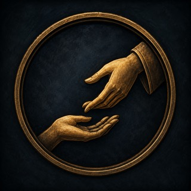
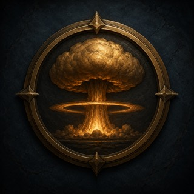
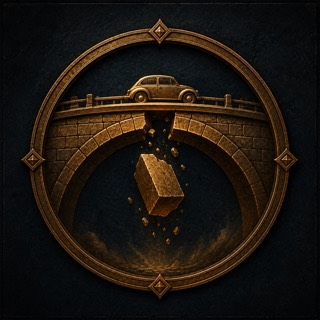
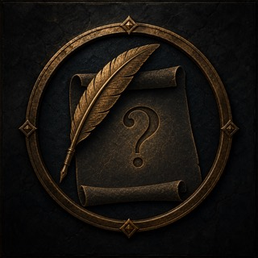
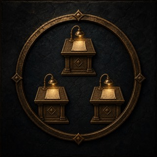

<!doctype html>
<html lang="de">
<meta charset="utf-8">
<title>Emblemprüfung bei 32 Pixel</title>
<style>
	body{margin:0;display:grid;place-items:center;min-height:100vh;background:#05090b;color:#e6d3a4;font:14px system-ui}
	main{display:grid;grid-template-columns:repeat(5,150px);gap:28px;padding:48px;border:1px solid #76542c;background:#0b1011}
	figure{margin:0;display:grid;justify-items:center;gap:10px;text-align:center}
	img{width:32px;height:32px;border:1px solid #a67d38;border-radius:50%;object-fit:cover;box-shadow:0 0 10px #8b5f28}
</style>
<main>
	<figure><figcaption>Zukunft</figcaption></figure>
	<figure><figcaption>Leid lindern</figcaption></figure>
	<figure><figcaption>Große Gefahren</figcaption></figure>
	<figure><figcaption>Übersehenes</figcaption></figure>
	<figure><figcaption>Frage</figcaption></figure>
	<figure><figcaption>Belege</figcaption></figure>
	<figure><figcaption>Drei Antworten</figcaption></figure>
	<figure><figcaption>Umdenken</figcaption></figure>
	<figure><figcaption>Zählen</figcaption></figure>
	<figure><figcaption>Veröffentlichen</figcaption></figure>
</main>
